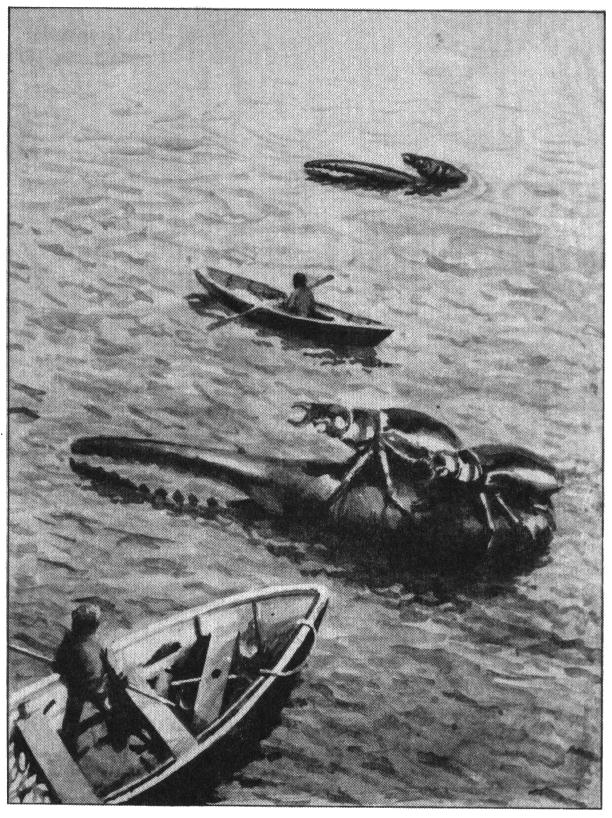
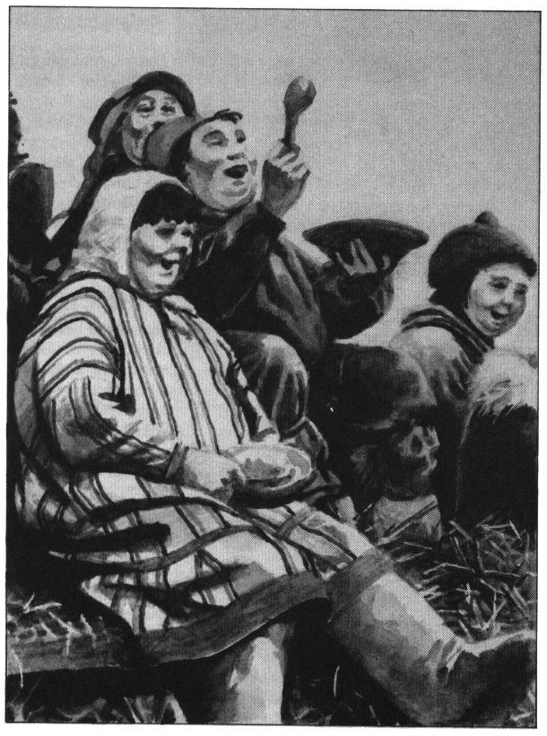
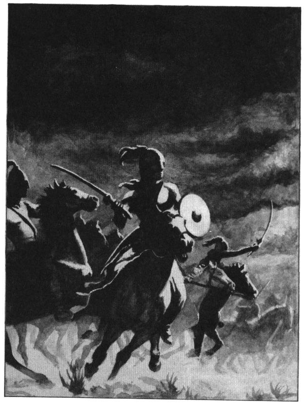
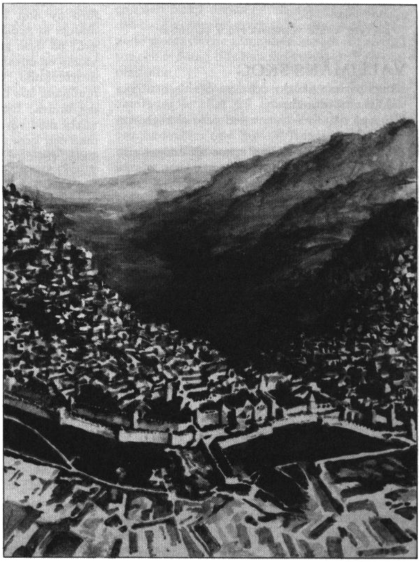

03. Saphyna
Frimbole Olvi
Ingen kan hysa annat än välvilja for den blommande staden Frimbole Olvi dit man anländer efter sjöfärden över Saphynersundet.
Mullen på Frimbolinerslätten är så bördig att innevånarna vid missväxt blandar den direkt med mjöl, och av blandningen bakar ett såväl närande som välsmakande bröd. Om sommaren driver denna mull upp kaskader av humle och korn som bönderna kokar med svart betsirap och sedan brygger till öl. Man är med rätta mycket stolt över sitt öl och har den goda seden att bjuda var främling ett stop redan i hamnen.
Mitt första, och fortfarande bästa minne från Saphyna är därför ett gott mått öl på kajen i Frimbole Olvi, ett öl lika tjockt, mustigt och svart som gåsblodsoppa.
Min trakoriska resa hade inletts med en stormig överfart från ön Bzegusta. När vinden tog fart i Saphynersundet, var jag många gånger på väg över relingen som ett frivilligt offer till djupens grymma gudinna Anxalis. (Må hennes hår falla av som rutten tång, eftersom jag nu är tillbaka på fastlandet!)
Min räddare, en resande köpman och äventyrare vid namn Baldyr Brummare, blev i stillsammare väder min gode vän och följeslagare på resan.
Hans tillnamn faller sig naturligt sedan man hört det utdragna bölande som hos honom ersätter normala människors skratt. Baldyr är en berest mångkunnig man som lärde mig mycket om trakoriska seder och bruk, men hans kunnande lämpar sig dessvärre sällan att fästa på anständiga pergament.
Förutom från Bzegusta, kan den mer äventyrlige nå Saphyna från Magilre eller från staden O längst inne i Rahm Nakras vik. Staden O heter verkligen bara ”O”. Enligt sägnen yttrade stadens grundare, den heliga Kornella, detta ljud när hon första gången skådade nakrernas oblyga klädsel. Hennes ”O” imponerade så mycket på dessa urinnevånare, de kunde nämligen på grund av hundraårig inavel inte längre truta med munnen, att de bar henne i guldstol till sin by, och döpte om den till just O. Tyvärr lärde de sig aldrig uttala namnet, utan tvingades använda beteckningar som ’staden-man-inte-kan-säga’ eller ’den-där-sta’n-ni-vet!’. Med tiden ägnade nakrerna så mycket tid åt frustrerade språkövningar att de glömde allt annat och dog ut, men staden lever vidare. Jag återkommer till staden O vid senare tillfälle.
En afton, jag tror det var på överresans tredje dag, pekade Baldyr Brummare över vattnet in mot den nedgående solen. Med viss ansträngning kunde jag där urskilja en hög, avrundad silhuett. Jag frågade om det var en sovande val, men Baldyr flinade åt min okunnighet, vilken han fann ”avgrundsdjup som det hål genom vilket jordskivans axel löper”. (Han menar att världen är platt, vilket även jag plägar betrakta som möjligt)
”Det där, käre Brior, är raugoner”, upplyste han och kisade mot solen.
”Man ser dem sällan så här långt in i sundet, vilket är en god sak, men längs kusterna vid Lasemos kallas de ’havsspindlar’ eller ’mördarkrabbor’ och är en stor plåga. Hade vi stött på dem bara några veckor tidigare på året vore vi nu alla ämnade för döden!”
Som detta var i månaden taragan, ägde vattnet liksom luften en avsevärd kyla. Baldyr menade att just kylan gjorde dessa raugoner slöa till sinnes och därför obenägna till jakt, vilket alltså var den enda orsaken till att jag ännu kan krafsa min gåsfjäder mot pergamentet.
Medveten om min reskamrats sinne för goda berättelser, men likväl fascinerad av den flytande kolonin vid horisonten, tog jag tillfället i akt när jag senare kom till Tricilve, denna lärdomens pärlebädd, att vid kejserliga biblioteket studera en avhandling i ämnet.
I sanning fann jag raugonerna skrämmande och över måttan glupska, även om jag fortfarande tror att vi såg en sovande val den gången.
Folket i Frimbole Olvi är liksom på hela Saphyna mycket vänligt.
Genom historien har staden med den omgivande slätten låtit sig erövras av främlingar utan att göra motstånd. Eftersom jorden är så omåttligt bördig finns det nämligen tillräckligt för alla oavsett hur mycket erövrarna för bort eller stuvar undan.
Det berättas om härföraren Hiatus Neffro, känd som ”den galne milacken”, att han efter en motståndslös marsch in i Frimbole Olvi året 288 eO ville straffa landets befolkning för dess feghet. Hans rådgivare ansåg detta helt onödigt, men hängdes mangrant i tungorna för mjäkigt tal.
Efter denna nesliga handling instruerade härföraren sina knektar att föra till skeppen en tredjedel av allt användbart de kunde finna inom tre dagsmarschers avstånd. Ingen vågade invända, utan ordern utfördes till punkt och pricka med påföljd att milackernas hela handelsflotta överlastades och gick till botten inom sju timmar. Hiatus Neffro lyssnade under tiden till musik av puka och fick inte störas.
Då han omsider såg de sjunkna skeppens masttoppar sticka upp ur hamnbassängen, blev härföraren så rasande att han personligen grep en fackla och red i sporrsträck ut över fälten där säden stod manshög med sina mogna ax. Hans avsikt var att sätta eld på ’hela detta förbannelsernas och käringarnas maskbo’.
Även denna handling var mindre lyckad.
Det torra vetet brann som fnöske och brände på några ögonblick upp hela invasionsarmén som kamperade i närheten. Brinnande tygtrasor från lägertälten for i sin tur till väders och antände krigsskeppen som ankrat ute i flodfåran.
Det sägs att Hiatus Neffro, som var en inbiten spelare, då han såg förödelsen kastade sina bästa tärningar av elfenben ut i floden, vars namn är Rubakin, mumlade om viktade tabeller och levde resten av sitt liv som eremit uppe i Matagdebergen. Många påstår, men sådant berättas förvisso alltid, att hans ande än i denna dag vandrar längs floden Rubakins stränder, nertyngd till utmattning av de limpor och stekta fåglar som putar ur hans fickor.

Frimbolinerslätten
Baldyr Brummare och jag vilade under ett par dagar upp oss i Frimbole Olvi, som visserligen är en stor och livlig, men ändå händelsefattig stad. Därefter fortsatte vi norrut.
Vår färd över Frimbolinerslätten tog närmare två veckor i anspråk trots att en vältrimmad trupp knektar torde kunna passera den på mindre än två dagar. Den väg vi valde var dock ingalunda rät, utan följde en av Baldyr Brummare uppgjord plan, avsedd att föra oss till alla de byar vars speciella läckerheter gjort trakten omtalad.
Vi blev heller aldrig besvikna. I varje by erbjöds vi husrum och mat utan misstanke på illsåt. Ja, sådan är frimbolinerbondens godtrogenhet att jag vid flera tillfällen placerades i pigornas kammare, vilket dock beredde mig föga glädje, då min sömn stördes av det myckna tissel och fnitter som stundom blandades med rena handgripligheter. Mer än en gång nekade våra värdar betalning för sina tjänster eller nöjde sig med en sång från mitt avlägsna hemland.
Då vi slutligen stod inför Matagdebergens fot med slätten bakom ryggen, var vi liksom stinna sommarsvin av det myckna ätandet. I fetma liknade vi därvid frimbolinerna, vilka utan undantag är överviktiga. Exempelvis anses barnen i denna trakt vara magra om man utan sked kan finna deras fingrar innan sex månaders ålder.
Mitt huvud spann som en sylf av vårfestligheter, bröllop, barnadop och inte minst av namnen på alla de telningar till vilka jag nu var gudfar. Ändå fann jag mina pergament tomma och gula. Jag lärde därav den visdomen att gott leverne har sina fördelar, men även ökar kroppens och sinnets flegma.

Matagdebergen och Tocmerskogen
Matagdebergen stiger, såsom berg ofta gör i Trakorien, utan förvarning ur lerslätten, varefter de ränner mot skyn i avskräckande branta klippväggar. Varken Baldyr eller jag kände större lockelse till ansträngande klättring med den vikt vi samlat runt våra kroppar, utan beslöt istället att söka en väg öster om bergens rand. Vi inledde vår vandring med att förtära merparten av den tunga matsäck man lastat på oss i byn Guffi, varpå vi svor att börja ett värdigare leverne. Saphynska byar har ofta namn som Guffi, Possi, Mullo och Kvoppe, ord som i öbornas öron uppenbarligen ljuder rart och hemtrevligt.
Floden Rubakin, som här löper längs bergens fot och samlar på sig en mängd mindre bäckar, förde oss in bland de kullar som hyser halvlängdsmännens hålor. Tyvärr flöt strömmen så strid att båtfärd var omöjlig i den riktning vi önskade fara, varför vi snart återfick våra sedvanligt sköna och smärta former av det myckna vandrandet.
Liksom människorna är även halvlängdsmännen på Saphyna artiga, vartill de även driver utmärkta värdshus, där man dock ingalunda tillåts betala med sånger. De var emellertid ovilliga till närmare umgänge med människor, och i synnerhet med oss, varför vi inte såg mycket av deras boningar eller seder.
Baldyr Brummare erkände så småningom att han varit i trakten tidigare och under lätt rus upprepat sjungit sången ”Va’ har’u har’u för’e, lilla pyre?”, vilket kan ha påverkat mottagandet.
I den lilla byn Pjullo vid sjön Limmarsfjäset, där man kokar ett särdeles starkt trälim av björksav och oxblod, tvingades vi åter välja mellan vägen över bergen, som här är något lägre, eller att gå genom skogen Tocme. Vi valde liksom tidigare den plana marken, men förstod att byfolket ogärna själva besökte Tocmerskogen. Jag frågade om faror dolde sig bland träden, men fick en axelryckning till svar. Man plockade ofta utsökta nötter i skogsbrynet, men gick ogärna längre in. Vi skrattade åt dessa försiktiga landsbor, gav dem rådet att rulla snören i sitt spår om de var så rädda för vilsnad och gav oss åstad i gryningen.
Tocmerskogen visade sig vara tämligen ofarlig. Den var däremot full av mispelsnår. Mispeln är som alla vet en blåblommande buske med rörliga frön, vilka för att kunna gro behöver suga i sig en droppe blod. Med sina hullingar hakar de fast i pälsen eller kläderna på förbipasserande varelser och kravlar sig in till skinnet som de genomsticker med sin tagg.
Efter någon timmes tapper färd tvingades Baldyr och jag ge upp den ojämna kampen mot utsvultna fjolårsfrön och vände skamsna åter till byn vid Limmarsfjäset. Hela byns befolkning, såväl människor som halvlängdsmän, hade samlats för att ta emot oss. Detta var speciellt nesligt för min nästan nakne reskamrat. Han hade i ett raseriutbrott gått i närkamp med en av buskarna och efteråt tvingats ta av sig kläderna som var så fulla av mispelfrön att de kravlade runt på egen hand.
Ändå stannade vi i Pjullo till nästa morgon, där folk plötsligt månade om att hålla oss kvar, som för att dra mesta möjliga ur sin skadeglädje.
Vi lärde i byn att det inte finns någon bra väg mellan Frimbolinerslätten och staden Gudiena på andra sidan Matagdebergen. Att runda Tocmerskogen vore dels tidsödande, dels vanskligt eftersom Saphynas östra udde, halvön Miasma bortom skogen, är ett enda stort träsk där luften är mindre hälsosam för människor. När vi envisades, ritade man slutligen en karta med kända vandringsleder över bergen, men varnade samtidigt för rövare i passen. Då morgonen kom tog vi oss alltså över Matagdemassivet på snirklande stigar. Några rövare såg vi aldrig. De få herdar vi träffade bjöd in oss som gäster, gav oss varmt öl och gnuggade våra frusna fötter med björnmossa.
Gudienerslätten
Staden Gudiena är till skillnad från Frimbole Olvi starkt befäst. Här bor den populäre kondottiären Ripigus Oxenklöv av Bhannavil, som leder styrkorna på Saphyna sedan ett tiotal år tillbaka. Redan när kontraktet undertecknades mellan Oxenklöv och dåvarande primus prokuratorn från Paratorna (hans namn har tyvärr fallit ur mitt minne), imponerade härföraren genom att inför Shamash och Trocuspa svära att försvara ön med sitt liv. Detta var helt onödigt men typiskt för en gammeldags adelsman från Palamux.
Ripigus Oxenklöv har grovt delat sin här mellan Gudiena och Gaaz Ulul i väster. De två huvudgarnisonerna patrullerar var sin halva av Saphyna, medan kavalleriet i Gaaz Ulul även betjänar Frimbolinerslätten, då södra landsvägen ger de beridna trupperna stor rörlighet, vilket är en fördel vid räder från pirater eller raugoner.
Slätten mellan Gudiena och hamnstaden Tigôld är nästan lika bördig som runt Frimbole Olvi, men mer riktad vad gäller gröda. Således odlas i stor mängd coffabusken, av vars nötter paratornier och saphynier brygger coffa om vintern. Dessutom driver de många klostren och läkeskolorna upp kryddor samt allehanda läkeörter.
Brygden zombin, som fortfarande används till dövande av krampsjuka eller till mildrande av våldsmän, blandades för första gången av drogmakare i Gudiena. Sedan min berättelse från Marjura publicerades, har många undrat över denna drog, och jag riktade därför en allmän förfrågan till akademin i Tricilve över ämnet. Jag väntade mig inget svar på en så direkt framställning i en känslig fråga, men har överraskande nog fått en uttömmande översikt.
Eftersom svaret ger en god bild av paratorniernas syn på Saphyna, och dessutom berättar såväl om zombinet som om det märkliga slag på Gudienerslätten som i historierullarna kallas ”ylarnas afton”, återger jag brevet i sin helhet. Jag har tagit mig friheten att kommentera texten där så synts mig motiverat. Det bör vidare poängteras att den förolämpande tonen i detta dokument är typisk för alla paratornier av rang. Blygsamhet anses på Paratorna vara ett tecken på svaghet och inställsamhet.
"Rörande Saphyna, ylarnas afton samt tillkomsten av brygden zombin.
Nedpräntat av Sunimax Synhestållt, bärare av den bjällrande hatten, tillika primus scriptarius av sångernas akademi, den enda, av Tricilve. Präntat under den femte av veckans dagar.
Allt sedan vårt rikes historia kommit att intressera vissa lärda sekter i fjärran land, har till vår akademi inkommit legio spörjande skriftabud om alkemiens läror rörande Zombinerbrygdens kokande och finare verkan.
Enär flera, av oss utsända ögontjänare, låtit höra att dessa konungariken övar föga hot mot Trakoriske värden och domäner, har det nådigast skänkts mig befallning att upplysa det barbariets mörker som därstädes synes råda.
Följen således, I snokande herrar och horror¹, min pärlesträng av bildad kristall, efter vars och ens hugnad och huvud:
Inför eder, okunnige hopar, må det strax lämpa väl, att till baktal korteligen orda över öen Saphyna, denna Trakoriens ludna fotabjäll, där trakterna folkas av märklige männer. Således födes och lever var god Saphynier med ögat vänt mot den dy ur vilken han uppstod. Därutöver ser han intet och märker intet. Blott letar han rötter likt svinen eller sår en enkel gröda och finner nöje i att timmavis betrakta dess tillväxt.
Saphynierns tanke genomkrälar stilla hans huvud, såsom masken borrar senigt kött. Dock är han trägen till arbete och ståndsam vid sitt ord. Således är han en god träl under tålsamma herrar.
Vändes en gång av misshugg eller ungdoma sprängmod hans öga mot solen, bländas han utan måtta. Då flinar Saphyniern och blinkar, plägar yttra ord såsom: ’välan är lifvet stort!’, vilka för honom skälva av djupsinne. Dock tröttas han raskt och vänder omsider åter till dyn, vilken för allan dag sluter honom i sin våta famn som en huld moder.
Inför ädlingen från Saphyna söker den välfostrade finna de drag av storhet vilka åtfölja alloma länders välborne, dock utan framgång. Den ädle Saphyniern visar med sitt folk därtill alltför stor liknad. Han finner nöje i enkelhet såsom att bebliga sin mark från sitt högan torn, eller att genom byarne gå för att med smil i synen klappa tassebarn över flottiga skulten.
God smak saknas honom stort. Så även lärdom. Värver han stormänga guld, låter han genast tälja halvtjoget bildastoder av lika form, i tron att flertal ger skönare blickfång än enfald. Hans mun smakar sällan gott vin, men njuter med vällustiga läten ett osilat betöl, sådant högre folk häller åt svin, kallat ’sörpa’.
Det torde stå eder, I mest fåkunnige av bröder och systrar, väl för synen att Saphyna vore stilla likt kall gröt på herrafat om blott icke ormar gåvos i detta land.
Dock, liksom eldfåglar stundom stiger ur träskens gölar, födas blott alltför ofta ur detta tröga folk ett underbarn, en kilande silverdroppe bland gråstenar, en mustelon bland sömnslokar.
Välast vore om dessa barn sattes till skogs i sin linda, men därtill äro de alltför listiga, däri de redan vid födseln förmår uppväcka sympati hos enklare själar. Det står blott till tidig ungdom förrän silverbarnet äga öra hos hela nejder genom sin ostridliga vishet. Man färdas dagaresor för att söka dess råd i svårheta mål.
Så springer snart ur dess huvud en av dessa tankar om vilka man säger: ’Pestsmitta och planer från Saphyna är skeppsträets hämnd mot fjärran folk’.
Silverbarnens tankar har trots skiftnad ständigt trenne ting i gemen:
Pro primo ljuda de udda. Pro sekundo äga de lockelse då de synas märkbarligt sunda. Pro tertio och sista, leda de utan särskap till fördärvelse, därest de föres till gärning. Detta är arvet från Krindenland.
Icke tror väl någon sunder karl att guden Remuntras lära, denna smittande sinnesröta, av en händelse stammar från Saphyna!
Således finner zombinerbrygden, varom I okunnige sporden, sitt uppstånd i baronatet Gidena, nedom västliggande bergen näst Saphyni inhavskust.
Där levde i årgångna tider en alkemikus och drogmäster. Hans öron vidgades till namnet Harlevold och han var tredje äkta sonen till baron Hurrum Hakeborst av Gidena. Denne Harlevold föddes framfota, blott därtill ypperst farosam av sitt ädlaskap, med den maktens dådkraft sådan börd vill skänka.
Det timades i dagarna dåledes över Saphyni land ett orättfärdigt grams gentemot vår härliga hemö, den grönskande och skönfolkade Paratorna, därest ett stycke bördig jord ur Gudeni dal av riket rätteligen tagits i anspråk. I denna mylla syntes det var Saphynier särdeles njutligt att åter få begrava sina breda tår.
Således uppkastade Harlevold Hakeborst, efter tankemöda som förundrade landen mellan Gudena och Korjulme, det följande inför konungarådet i Gazela²:
Ur Harlevolds huvud var sprunget en drog av märkeligt slag, med makt att alloma sinnen förvrida. Dess namn var skrivet till ’Zombin’, efter dödgångafolket kallad.
”Välan”, ljöd det illt ur hans huvud, ”välan låt oss till Gudeni befrielse skapa en här ur det löskefolk, vilket i dårdalar, vanfören och fattastugren dväljes, en här som vår röstmakt följer utan fruktan över död, lyte eller annorstäda småting! Ty sådan är Zombinerbrygdens verkan att var tillsägelse åtlydes utan egentanke³.”
I övertygnad om planens lysande godnad stod, av Harlevolds förtanke, redan fem gånger trenne och två båtkar jäst Zombinerbrygd i lager under Gudeni arvegods, varty så skaad⁴.
Hopades så spillrat folk i hemligt mak att trattvis och slangledes fodras dryckjomet, ty sådan beskhet dväljer den att fritt man den näppeligen dricker.
Där samlades så en mäktig här över slätten, och som med döder blick närmades Paratorni härläger. Då nu vaktafolket skådade en så sällsam syn, skreko de av fruktan och togo flyfoten till. Men ensammerligen dröjde blott en knekt av enkelt huvud med ropet: ”Gören halt, I slemma horder! Här komma ingen över bron!”.
Viljelöst togo hjonen i Harlevolds här desse order till öra och stannade strax att tombliga mot dyn.
Från bakahåll drevo snart Saphynierna zombinerhären åter fram med högande rop, men då Paratorni krigamän sågo hursom en ende knekt mäktat stoppa marschen, stego de ivert framom att rösterne pröva. Där velade nu zombinerfolk än hitan, än ditan, allt eftersom orden föllo i deras örontrattar. Ja, sådant var skriandet över slätten att detta slag kom att nämnas ”ylarnas afton”.
De velige massorna böljade fram och åter allt medan halsar hesnades till tystnad.
Då hämtades omsider ur Paratorni fäste en härold med röst som ett tordön. Skrynk var hans namn. Såsom ett gapande schakt var hans munhål ur vilket maningen steg:
”Slakten edra skapare!”
Och se, liksom floden vänder vid ebbatid strömmade zombinerhären, då de nu hörde hans ord, tillbaka mot Harlevold Hakeborst och hans nu blott pipande männer. Kilande löpegossar sprungo i leden och täppte de viljesvages örongångar med bivax till, på det de ej höra månde något utöver detta:
”Slakten edra skapare!”
Och så skedde.
Och bloden flöt härligt gräll.
Sådan går sägnen, men detta var yttersta gången som Saphyni folk lyfte vapen mot sina herrar; de skönhärskande fogdar ur Paratorni land, vår moder.
På det att eder fåkunnighet vidare minskas månde, ty en styggelse synes den vara, lämnas häröver den kornad Zombinerbrygd bör vederfaras:
Zombinerbrygdens koknad
Till zombinerbrygden tages trenne rågade ämbar starkert, rykavarmt avkok på coffabuskens nöt. Det skall kokas av bästa klarnadens källavatten.
Stjälper man däruti fem och två skålpund surnat korn, där anfrätnad av foteld⁵ begynnes skymta. Röres ämbaret fullert av vilderhonung i rykavarmt källavatten samt stjälpes däruti.
När svalnad haver inträtt röres brygden med inkråm av nyfångad Tedroderkarp⁶.
Slages brygden, zombinermäsk nu namnad, på ekefat till jäsnad fullan årtid. Stjälpes vid lämplig klarnad däruti en kanna luftsimmad⁷ sylvoleum av dryparpilen⁸, samman med något salt.
Då jäsnaden fullbordats, nyfatas brygden att slutvila yttermera året, varpå styrknad synes såsom bäst.
Skrifver Sunimax Synheståålt, den ende.”
¹Horror är en ålderdomlig pluralform av substantivet horra, vilket betyder ärevördig kvinna. Här får de högtidliga ordet en falsk klang, vilket sannolikt är författarens avsikt. Det är en allmän uppfattning i Tricilve av kvinnor ejj bör anförtros grytgöra i finare kök eller laboratorier.
²Gaaz Ulul
³Här gör sig författaren sannolikt skyldig til en överdrift. Saphyniern tar väl han om sina sjuka och gamla, och skulle knappast använda dem som svärdsföda. Med största sannolikhet användes bara fångar och ut-öingar till zombinerarmén. På Paratorna däremot är man inte känd för någon större omsorg utan anser olycka vara gudarnas rättvisa straff eller följden av egen dumhet.
⁴Skaad = ålderdomlig imperfektform av verbet ske.
⁵Mjöldryga
⁶Tetroderkarpen är en läcker fisk som fångas i Trakoriska sjön. Dess inälvor är dock dödligt giftiga. Verkliga finsmakare unnar sig en gång i livet den yttersta smakupplevelsen och dör sedan lyckliga.
⁷Lättflyktig
⁸Oljepilsträdet

Korjulme
Från Gudienerslätten slog jag och Baldyr Brummare följe västerut med en gammal vänlig droghandlare som bjöd oss skjuts på sin kärra redan invid stadsporten. Vi tog tacksamt emot hans erbjudande eftersom sträckan mellan Gudiena och Gaaz Ulul ringlar sig långan väg genom många små baronat i provinsen Korjulme norr om Matagdebergen.
Vagnen drogs av en åsna som trilskades över den extra vikt jag och Baldyr medförde. Vi tvingades turvis leda öket vilket avsevärt förbittrade färden. Bortsett från ansträngningen i sig, högg kräket tänderna i mina kläder eller mitt skinn så fort jag kom inom räckhåll. Droghandlaren var dessutom så skumögd att han lika ofta lät piskan vina över mig som över åsnan när han fick sina raseriutbrott. Vid dessa tillfällen mötte djuret medlidsamt min blick, men skrattade otvivelaktigt med hela sin svartludna själ.
På höjderna i Korjulme tronar här och var adelsgods, vilka ej är befästa i denna trakt. Till varje gods hör ett halvdussin byar och de stora fruktodlingar som, tillsammans med havets gröda, utgör Korjulmes viktigaste näring.
En enda gång besökte vi ett av lantgodsen. Baronen, vars namn jag helst vill glömma, tog personligen emot oss med den hjärtligaste omfamning, sade sig sällan haft så vittresta gäster och tvingade oss resten av kvällen att lyssna till oändliga ballader av egen komposition, tillika på fastande mage då maten enligt hans mening gör människan sömnig och ouppmärksam.
Nästa morgon tog vi ett hastigt avsked och reste vidare mot Gaaz Ulul under ständigt tjuvande av frukt, en sed vi lärde av droghandlarens åsna. Frukten fick emellertid våra bukar att vädra som muntra blåsbälgar.
En kylig afton bjöd oss droghandlaren en speciell, sydländsk tobak som fick mig att se violetta grisar i buskarna, men annars hände inte mycket.
Det berättas att svartfolk från Matagdebergen plägar göra räder ner mot Korjulme, och förvisso såg vi ett par nedbrända byar, men därutöver intet.
Gaaz Ulul
Gaaz Ulul har byggts direkt mot bergssidan med så branta gränder att kärror knappast används innanför murarna. Allt gods lastas istället om till bärare och till de stora, dresserade klippgetter som ger staden dess speciella stank.
Handeln med varor som skeppas in och ut via hamnen i Krindenmaar sker till stor del i Gaaz Ulul, dit också skogsfolket i de vidsträckta Abrolunerskogarna för sina viltskinn. I skogarnas sydliga del hämtar man järnmalm ur myrarna till stadens smidesverkstäder.
Rent strategiskt utgör Gaaz Ulul ett lås i passet som förbinder södra och norra Saphyna. Därför är stora arméförband förlagda i trakten, och dessutom en kavalleristyrka med hästar och några hippogriffer. Kavallerister i Trakorien använder en speciell långskaftad sabel kallad saryng, som ger ifrån sig ett högt vinande ljud när man svingar den. Detta ljud skär illa i öronen på svartfolk och djur.
Baldyr och jag stannade inte i Gaaz Ulul eftersom rödsoten härjade innanför ringmuren, utan vandrade vidare mot Krindenmaar. Till avsked ville jag ge droghandlaren ett exemplar av min essä om metallernas väsen, men åsnan snappade åt sig pergamentet och slukade såväl tenn som koppar och guld innan vi fick upp dess mun med hjälp av en mortelstöt. Det gjorde nu inte så mycket eftersom handlaren ändå bara läste bilder. Sådan grannbjäfs tillåts näppe besudla mina essäer.
I den utmärkta skriftsamlingen ”Resbok för öarnes hieltar”, beskriver tjuven Lususke tre tänkbara platser för äventyr på Saphyna.
Den första platsen är enligt honom Tocmerskogens inre, dit få har vandrat. Man kan i klart väder se ett ensamt berg resa sig långt inne i skogen, där rök stiger från många eldar av okänd natur. De varelser som tänder dessa eldar tycks ha föga intresse av människosällskap, men besvärar heller ingen.
Den andra platsen är Matagdebergens otillgängliga dalar, dit utstötta i alla tider tagit sin tillflykt. Sannolikt finns de enda svartfolksstammarna på Saphyna i dessa berg, men de är små och dåligt organiserade.
Ibland gör de, som tidigare nämnts, korta räder ner bland godsens fruktodlingar.
Den tredje och minst kända platsen kallas Krindenland.

Krindenmaar
Baldyr Brummare och jag kom nattetid till hamnstaden Krindenmaar och hade turen att få se en av årets vackraste ljusbävningar över Krindenland.
Ingen vet riktigt vad som orsakar de ljusbävningar, jordljud, formvandringar eller andra märkliga fenomen man bara ser i Krindenland, men helt klart är att landskapet inte beter sig som det borde.
En teori säger att Krindenland i fjärran tider hyste en mycket vacker bygd som drabbades av ett gigantiskt jordskalv. Detta jordskalv vände landet upp och ner så hastigt att själva dagsljuset tillsammans med ljuden från skogar och folk fångades i håligheter långt under markytan. När det hårt sammanpressade ljuset och ljudet lyckas fly upp genom sprickor i berggrunden, exploderar det i symfoniska fyrverkerier ovan jord i lycka över sin återvunna frihet. Kanske ber det också om hjälp för sina instängda fränder.
En sekt soldyrkare, vars tempel kröner bergsplatån norr om Krindenmaar, kallar fenomenen för ”Vallimans klagan”. Enligt dessa druider sörjer solguden Valliman ur dödsriket, dit hans bror Drigel sänt honom som straff för hans otacksamhet. Druiderna väntar att straffet ska ändas och Valliman lösas ur sin fångenskap, men då de hör honom klaga samlas de på klippkanten för att enas i monotona koraler ägnade att mildra hans ångest. Sångerna vill också blidka den stränge Drigel så att han förkortar straffet.
Vallimans död skildras i poemet ”Vallimans skog”, vilket reciteras varje afton mot den nedgående solen.
De fyra första verserna lyder sålunda:
Vallimans skog
Långt bortom skogar och hav där de dödligas blickar fördunklas Sitter på vittrande tronen den siste av högborna gudar Trött på sin visdom han orkar nu endast sitt konstverk beskåda Vem har väl känt mer än fäder den lön som världarna gäldar?
Skapelsens möda är sorgesamt lika, bitter och ofri Vemodigt ser han hur mäktiga riken byggs upp och förfaller Arket är fullskrivet, intet är nytt under stjärnornas rymder Tiden ska fullbordas, endast på detta väntar han utled Bländas hans urgamla öga som skådat släktenas öden Bländas och lockas av slätter som förr han håglöst passerat Tomma på skapelsens horder de skymtar i världsalltets utbygd Falnande lidelser väckes i åldringens tungsinta hjärta
Ej sedan seklernas gryning han lyft sina händer till gärning Nu innan domen skall falla ett sista verk vill han delges Dock ej som förr vill han åter bestämma sitt skådespels utgång Mäktigt men fritt kan från händerna utgå den skapande kraften
Sången beskriver hur Valliman föds med en fri vilja, men hur han dåraktigt söker svar på de förbjudna gåtorna istället för att tacksamt ta emot sitt liv och sin vackra skog.
Hur det nu förhåller sig med myterna i Krindenland, kan ingen förklara det man kallar formvandring. Allt i detta märkliga bergsland tycks nämligen förvridas med tiden. Floder ändrar sina lopp, sjöar buktar som plåtar, klippor byter skepnad på ett månvarv så att inga landmärken består. Kort sagt tycks det som om halvön Krindenland lyder under andra naturlagar än resten av världen.
En expedition lärda män från Lasemos, anförd av den vise Cambalum, vandrade för många år sedan in i Krindenland för att söka svar på dess gåtor. Fem veckor senare återvände en ensam, förvanskad bärare som enda överlevande. Vid en undersökning befanns mannens ena ben vara en halv aln kortare än det andra, högerhandens fingrar sammanväxta med varandra, bröstkorgen timglasformad och knäna böjbara i alla riktningar. Ansiktet visade en djup fåra i mitten som om huvudet höll på att dela sig i två, och utväxter liknande ögon hade formats på kindbenen. Mannens sinne var för alltid mörklagt och inget tal kom någonsin ur hans mun igen.
Mannen visades länge för pengar i Tricilve, men han gick bort strax innan jag anlände till Paratorna.
En icke oäven teori säger att Krindenland är Timatias skarv mot ett parallellt universum, och att de två världarna i gränslandet kämpar om makten. Skulle det förhålla sig på detta sätt, finns antagligen en passage till den andra världen någonstans på halvön, men varken jag eller Baldyr hugades söka. Vi trivs båda med livet precis som det är, och särskilt på tavernan ”Fiskefröjd” i Krindenmaars hamnkvarter. Min redan fagra nuna torde heller ej kunna förbättras märkbart genom knådande av främmande världslagar.
Jag vill inte orda vidare om Krindenland, men påminner helt kort om att guden Remuntras lära uppstod just här.
Mot Palamux
En natt i Krindenmaar avslöjade Baldyr Brummare att hans en gång välfyllda silverpung nu var betydligt lättare. Som hans ärende på Saphyna varit att överlämna just denna pung, men fylld med rikedomar, till en pengalånare i Gudiena, såg han intet skäl till att dröja ytterligare på ön, utan förklarade sig villig att följa mig på min resa till Palamux. Detta besked gladde mig storligen, varför vi i skydd av nattens dimma gick ombord på en spannmålsbåt med destination Soblak. Då morgonen kom lättade farkosten ankar och den goda ön Saphyna sjönk i sydhavet inför våra blickar.
Vi vände nu tanken mot Palamux.